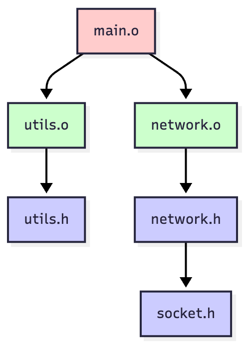
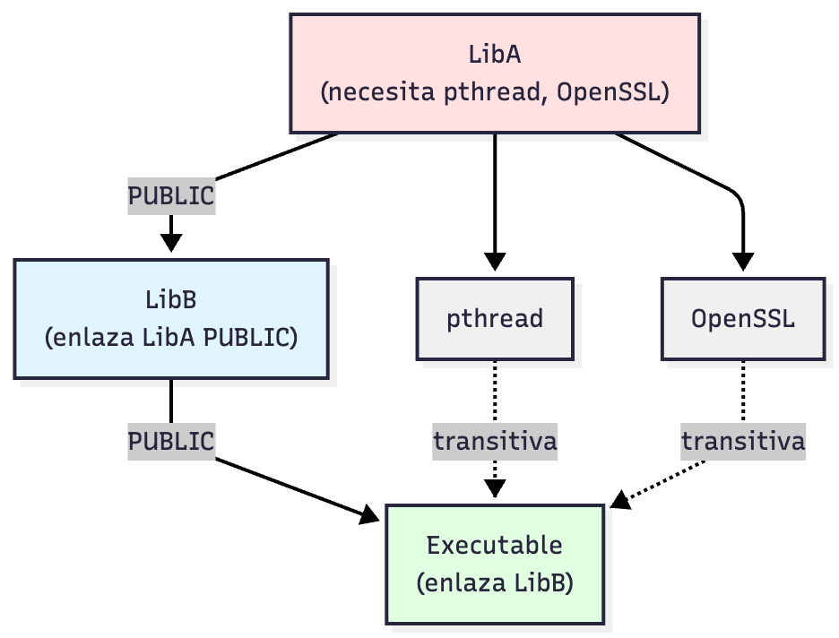

Configuración y adaptación automática de proyectos
Introducción
¿Es suficiente con make?
Hasta el momento, hemos usado make para automatizar el proceso de compilación de nuestros proyectos.
- Makefiles con reglas y dependencias
- Variables y patrones
- Compilación incremental
- Automatización del proceso de distribución
¿Es suficiente con make?
make es una herramienta potente, pero…
- Sintaxis específica y arcana
- No es portable por sí solo
- Configuración manual del entorno
- Sin detección automática
¿Es suficiente con make?
Junto a esto, se suma un problema peor: la portabilidad
¿Esto funcionaría en Windows?
¿Es suficiente con make?
Bajo el sistema tradicional de make, deberíamos mantener, al menos, un configurador de proyectos por sistema operativo.
¿Es suficiente con make?
El problema de la mantenibilidad:
Digamos que empiezas con Visual Studio; tienes un archivo de solución y un único archivo de proyecto. Ahora supón que tu proyecto empieza a crecer y quieres que otras personas trabajen en él; necesitarán Visual Studio para poder abrir tu archivo de solución, compilar todos los archivos fuente y ejecutar tu ejecutable.
¿Es suficiente con make?
El problema de la mantenibilidad:
De repente, llega alguien que usa Linux quiere usar tu proyecto. Visual Studio no existe en Linux, así que investigas un poco y descubres que hay que definir un Makefile. Así que lo implementas todo va bien.
¿Es suficiente con make?
El problema de la mantenibilidad:
Después de un tiempo, te das cuenta de que es molesto mantener tanto tu proyecto de Visual Studio como tu Makefile. A cada cambio que haces al proyecto, te encuentras actualizando tu proyecto de Visual Studio y olvidando actualizar el Makefile, hasta que alguien que usa Linux se queja.
¿Es suficiente con make?
Además, hay algunas personas que ejecutan diferentes versiones de Visual Studio que tú y que te exigen que proporciones archivos de proyecto que sean compatibles con sus versiones. Es decir ¡debes tener una versión del proyecto para cada Visual Studio existente y la de Linux!.
¿Es suficiente con make?
Es decir ¡debes tener una versión del proyecto para cada Visual Studio existente y la de Linux!.

Meta-Build Systems
Fundamentos de los Meta-Build Systems
Los Meta-Build Systems se basan en no escribir ficheros de configuración de proyectos manualmente, sino describirlos en alto nivel y generarlos automáticamente para cada plataforma.
Fundamentos de los Meta-Build Systems
Estos sistemas se basan en una arquitectura de dos capas:
Capa Superior: Meta-Build
- Lenguaje de alto nivel.
- Describe QUÉ construir.
- Independiente de plataforma.
- Detecta el entorno.
- Genera archivos de build.
Capa Inferior: Build nativo
- Ejecuta la compilación real.
- Gestiona dependencias.
- Específico de plataforma.
- Invoca compiladores.
- Ejecuta el build.
Fundamentos de los Meta-Build Systems
Nosotros configuraremos solo la primera capa, el Meta-Build. La segunda capa la genera el software de configuración automáticamente.
Fundamentos de los Meta-Build Systems
Ventajas de esta arquitectura:
Abstracción de plataforma: Escribe una vez, compila en todas partes.
Optimización nativa: Usa el mejor build system de cada plataforma.
Integración con IDEs: Genera proyectos nativos (Visual Studio, Xcode).
Mantenibilidad.
Un poco de historia
2ª Generación
- AutoMake/AutoConf (1991)
- Scripts
configure - Detección básica
3ª Generación (Actual)
- CMake (2000)
- Meson (2013)
- Premake (2002)
Principios de diseño
Todo meta-build system debe resolver:
- Abstracción de plataforma: Un único lenguaje de descripción
- Introspección del sistema: Detectar herramientas y capacidades
- Gestión de dependencias: Encontrar y enlazar bibliotecas
- Generación eficiente: Producir builds optimizados
- Extensibilidad: Adaptarse a necesidades específicas
Principios de diseño
Principios de diseño
Importante
Las dos primeras fases son el meta-build, la tercera es la compilación real.
Fase 1: Configuración
En la fase de configuración se ejecuta lo siguiente:
- Parsing: Leer y analizar los archivos de descripción.
- Introspección: Detectar compiladores y herramientas.
- Resolución de dependencias: Encontrar librerías requeridas.
Fase 1: Configuración
En la fase de configuración se ejecuta lo siguiente:
- Validación: Verificar los requisitos del proyecto.
- Procesamiento de opciones: Aplicar la configuración del usuario.
- Generación de cache: Almacenar los resultados para builds futuros.
Fase 1: Configuración
Durante la introspección del sistema debemos descubrir:
Herramientas de compilación:
- Compiladores disponibles.
- Versiones y capacidades.
- Flags soportados.
- Linker y archiver.
Entorno del sistema:
- Sistema operativo y versión
- Arquitectura (x86_64, ARM, etc.)
- Variables de entorno
- Rutas estándar
Fase 2: Generación
Transformación de descripción abstracta a build concreto:
- Selección de generador: Makefile, Ninja, Visual Studio, …
- Procesamiento de templates: Expansión de variables.
- Creación de reglas: Comandos de compilación específicos.
- Establecimiento de dependencias: Orden de construcción.
- Configuración de instalación: Scripts de instalación.
- Generación de metadatos: Archivos auxiliares.
Fase 2: Generación
Generadores make-based:
- Unix Makefiles, MinGW Makefiles, NMake.
- Maduros, universales, más lentos.
- Paralelización con
-j.
Fase 2: Generación
Generadores IDE:
- Visual Studio, Xcode.
- Integración completa con IDE.
- Debugging nativo.
Fase 2: Generación
Generadores modernos:
- Ninja: Extremadamente rápido, minimalista.
- Optimizado para regeneración incremental.
Fase 3: Build (compilación real)
En este punto se ejecuta el build system nativo del sistema.
El Meta-Build system ya no interviene en este paso.
Tip
Sin embargo, algunos sistemas como CMake contienen funciones auxiliares en su CLI para ejecutar este proceso bajo un mismo entorno.
Conceptos Fundamentales
El target
Target = Unidad de construcción En la jerga de los Meta-Build Systems un target es una unidad de construcción.
Conceptos Fundamentales
El target
Taxonomía de targets:
- Ejecutables: Programas finales.
- Bibliotecas estáticas: Archivos objeto agrupados (
.a,.lib). - Bibliotecas dinámicas: Código compartido (
.so,.dll,.dylib).
Conceptos Fundamentales
El target
Taxonomía de targets:
- Targets importados: Referencias a bibliotecas externas.
- Targets personalizados: Comandos arbitrarios.
- Targets alias: Referencias a otros targets.
Conceptos Fundamentales
El grafo de dependencias
Las dependencias se establecen a través de un DAG
- Nodos: Archivos fuente, headers, objetos, bibliotecas, ejecutables
- Aristas dirigidas: Relaciones de dependencia
- Acíclico: No puede haber ciclos (evita dependencias circulares)
- Orden topológico: Define el orden de compilación

Conceptos Fundamentales
Análisis de dependencias
¿Qué hay que recompilar después de un cambio?
Timestamps
Sistema idéntico que en los Makefiles.
Conceptos Fundamentales
Propagación de dependencias transitivas

Conceptos Fundamentales
Propagación de dependencias transitivas
Gracias a esta estructura, el ejecutable enlaza diréctamente con con LibA, pthread, OpenSSL
Ventaja: No repetir dependencias en cada nivel
Conceptos Fundamentales
¿Qué implica el modo de propagación?
El modo de propagación indica la visibilidad de las librerías en tiempo de compilación al evaluar el target.
Conceptos Fundamentales
- PRIVADO: La dependencia se usa exclusivamente en la implementación asociada.
- Se usa exclusivamente en la implementación del código.
- No es visible por código que importe la fuente.
- No se propaga en compilación.
Conceptos Fundamentales
Ejemplo: La librería Pizzeria
Implementamos la clase Pizzeria y la clase HarinaEspecial.
- Pizzeria puede usar en su implementación
Cocina. - Pizzería no puede incluir
Cocinaen su cabecera. - Si alguien importa la librería Pizzeria y quiere usar
Cocina, debe enlazarla externamente.
Conceptos Fundamentales
- PÚBLICO: La dependencia se usa en el target Y en quien más quiera.
- Se usa tanto en la implementación del código del target como en la de cualquier otro que importe al target.
- La dependencia es visible por quien importe el target.
- Sí se propaga en compilación.
Conceptos Fundamentales
Ejemplo: La librería Pizzeria
Implementamos la clase Pizzeria y la clase Pizza.
- Pizzeria puede usar
Pizzaen su implementación. - Pizzería puede incluir
Pizzaen su cabecera. - Si alguien importa la librería Pizzeria y quiere usar
Pizza,Pizzase incluye automáticamente.
Conceptos Fundamentales
- INTERFAZ: La dependencia no se usa en el target, pero sí en quien lo importe.
- No se usa en ningún momento de la implementación del target.
- La dependencia es visible por quien importe el target.
- Sí se propaga en compilación.
Conceptos Fundamentales
Ejemplo: La librería Pizzeria
Implementamos la clase Pizzeria y la clase Delievery.
- Pizzeria no usa
Delieveryen su implementación. - Pizzería no incluye
Delieveryen su cabecera. - Si alguien importa la librería
Pizzeria, puede usar los métodos deDelieverysi lo precisa. - No se debe explicitar el uso de
Delieveryen compilación.
Conceptos Fundamentales
Propiedades de Targets
En el Meta-Build System definimos también las propiedades de los targets
Tip
De la misma forma que modificarías en un Makefile los include paths, lib paths etc.
Conceptos Fundamentales
Gestión de Dependencias Externas
¿Qué hacemos con las librerías externas que usamos en nuestros proyectos?
Los Meta-Build Systems deben ser capaces de buscar las dependencias externas en el Sistema Operativo objetivo y descargarlas e instalarlas si es preciso.
Out-of-source builds
Las out-of-source builds son uno de los principios fundamentales de los Meta-Build Systems
Separar completamente el código fuente de los artefactos generados
Out-of-source builds
Ventajas de usar este enfoque
- Repositorio limpio (
.gitignore build/) - Múltiples configuraciones simultáneas
- Limpieza trivial (
rm -rf build/) - Sin conflictos de archivos
Out-of-source builds
Con el mismo código, generamos diferentes builds:
proyecto/
├── src/
├── build-debug/ # Debug con símbolos
├── build-release/ # Release optimizado
├── build-profiling/
└── build-windows/ # Otro SOCache de Configuración
No recalcular en cada build
Almacena:
- Resultados de introspección (compilador, versiones)
- Ubicaciones de dependencias encontradas
- Opciones configuradas por usuario
- Variables internas de estado
- Timestamps de última configuración
CMake
Introducción a CMake
CMake (Cross-Platform Make)
- Sistema más popular actualmente
- Lenguaje propio de scripting
- Meta-build system: Genera proyectos nativos
- Usado por: KDE, Qt, Blender, OpenCV, LLVM
- Ecosistema enorme de módulos Find
Introducción a CMake
Generadores soportados:
- Unix Makefiles
- Ninja
- Visual Studio
- Xcode
- NMake
- Y más…
Introducción a CMake
Principios fundamentales:
- Sepparation of concerns: Configure vs Generate vs Build
- Target-centric: Todo gira alrededor de targets
- Portabilidad real: Misma descripción, múltiples plataformas
- Extensibilidad: Funciones, macros, módulos personalizados
El lenguaje CMake
Características del lenguaje:
- Imperativo: Ejecuta comandos secuencialmente
- Case-insensitive:
add_executable=ADD_EXECUTABLE - Dinámicamente tipado: Variables son strings
- Sin retorno de valores: Funciones modifican variables
- Scope léxico: Variables por directorio/función
- Listas como strings: Separadas por
;
Variables en CMake
# Definir variable
set(MI_VAR "valor")
set(LISTA "uno;dos;tres") # Lista
# Usar variable
message("${MI_VAR}")
# Variables de cache (persistentes)
set(OPTION "default" CACHE STRING "Descripción")
# Variables de entorno
set(ENV{PATH} "/nueva/ruta:$ENV{PATH}")
# Variables del sistema
${CMAKE_SYSTEM_NAME} # Linux, Windows, Darwin
${CMAKE_CXX_COMPILER_ID} # GNU, Clang, MSVCScope de variables
Estructura Básica: CMakeLists.txt
Archivo mínimo:
Estructura Básica: CMakeLists.txt
Disección:
cmake_minimum_required: Versión mínima de CMakeproject(): Define proyecto, establece variablesadd_executable(): Crea target ejecutable
El comando project
project(MiApp
VERSION 2.1.3
DESCRIPTION "Aplicación de ejemplo"
HOMEPAGE_URL "https://ejemplo.com"
LANGUAGES CXX C
)Variables definidas automáticamente:
Targets: tipos y creación
- Ejecutables:
add_executable(programa main.cpp utils.cpp) - Librerías estáticas:
add_library(milib STATIC lib.cpp helper.cpp) - Librerías dinámicas:
add_library(milib_shared SHARED lib.cpp) - Librerías header only:
add_library(headeronly INTERFACE) - Targets personalizados.
Targets: tipos y creación
Todas las funciones de creación de targets reciben una lista de ficheros fuente necesarios para crearlo. La estructura es siempre ARG_1 = nombre y ARG_2 = fuentes. De esta forma, CMake monitoriza qué ficheros pueden sufrir cambios para recompilar.
Targets: tipos y creación
Nota
Puedes generar esto de dos formas. O bien como se explica aquí o con la función target_sources(), por si quieres dividir la forma en la que defines los ficheros fuente para target.
Targets: tipos y creación
Tip
No es necesario que indiques los .h o .hpp, CMake los detecta automáticamente como dependencias modificables.
Target properties
Propiedades definen el comportamiento del target
# Ver propiedad
get_target_property(TIPO milib TYPE)
# Establecer propiedad
set_target_properties(milib PROPERTIES
CXX_STANDARD 17
CXX_STANDARD_REQUIRED ON
POSITION_INDEPENDENT_CODE ON
VERSION 1.2.3
SOVERSION 1
)
# Propiedades comunes
OUTPUT_NAME # Nombre del archivo generado
ARCHIVE_OUTPUT_DIRECTORY # Directorio para .a
LIBRARY_OUTPUT_DIRECTORY # Directorio para .so
RUNTIME_OUTPUT_DIRECTORY # Directorio para ejecutablestarget_include_directories()
Actualizar los include dirs de compilación
target_include_directories()
Actualizar los include dirs de compilación
Nota
Esto es el equivalente de añadir manualmente -I ${INCLUDE_DIRS} en un Makefile.
target_link_libraries()
Enlazar con otras bibliotecas:
target_link_libraries()
Nota
Esto es el equivalente de añadir manualmente -lMakefile.
target_link_libraries()
Nota
Esto es el equivalente de añadir manualmente -lMakefile.
Advertencia
Recuerda que también tienes que actualizar los lib paths si incluyes librerías externas en tu proyecto. Para eso, deberás llamar a target_link_directories(), la cual tiene un comportamiento idéntico a la homónima vista anteriormente.
Organización multi-directorio
En el caso de contar con múltiples directorios, deberemos emplear una estrategia de división.
Organización multi-directorio
- Decidir qué parte de nuestro software forma el núcleo de un target.
- Pensar si alguna parte del programa constituye una librería.
Ejemplo: En videjouegos, el motor es una librería que luego la aplicación (el ejecutable) consume. De esta forma, éste es exportable a otros proyectos.
Organización multi-directorio
El directorio raíz contendrá un fichero CMakeLists.txt.
Organización multi-directorio
El directorio raíz contendrá un fichero CMakeLists.txt.
Ahí, se llamará a la función add_subdirectory() para que CMake busque el CMakeLists.txt del directorio objetivo.
Organización multi-directorio
El directorio raíz contendrá un fichero CMakeLists.txt.
Ahí, se llamará a la función add_subdirectory() para que CMake busque el CMakeLists.txt del directorio objetivo.
Importante
Esto no es una llamada recursiva, recuerda que CMake, a diferencia de make va a generar los ficheros de compilación, pero no va a compilar ningún proyecto. Este tipo de dependencias luego se resolverán en el DAG generado para crear dichos ficheros. CMake generará Makefiles monolíticos.
Organización multi-directorio
FetchContent: dependencias automáticas
Add-on de CMake para buscar automáticamente las dependencias del proyecto.
FetchContent: dependencias automáticas
Add-on de CMake para buscar automáticamente las dependencias del proyecto.
Si una dependencia no se encuentra, podemos ordenar que se descargue y añada al proyecto (de forma local).
FetchContent: dependencias automáticas
include(FetchContent)
find_package(raylib)
if (NOT raylib_FOUND)
...
FetchContent_Declare(
raylib
GIT_REPOSITORY https://github.com/raysan/raylib
GIT_TAG 5.0
)
FetchContent_MakeAvailable(raylib)
endif()Ventaja: No requiere instalación previa de dependencias
Comandos básicos de CMake
Para generar la configuración de tu proyecto, debes ejecutar:
Comandos básicos de CMake
Para generar la configuración de tu proyecto, debes ejecutar:
Advertencia
Esta es la forma de hacer un in-source build, la cual verás que es muy sucia. Lo recomendable es siempre hacer out-of-source builds.
Comandos básicos de CMake
Para generar una out-of-source build puedes hacerlo o manual:
o automático:
Comandos básicos de CMake
Para compilar tu proyecto. Puedes hacerlo de forma manual:
o usar el helper de CMake:
Comandos básicos de CMake
Tip
Una ventaja de usar el helper de CMake es que integras la compilación en un solo comando agnóstico al Sistema Operativo. Tú escribirás lo mismo en el terminal, mientras que CMake será el encargado de detectar cómo se debe compilar y realizar los comandos neceasrios en el sistema operativo que te encuentres.
Otros Meta-Build Systems
Meson
- Diseñado desde cero (2013) y enfocado en la velocidad
- Sintaxis Python-like, muy legible
- Backend Ninja por defecto
- Separación estricta configure/build
Meson
Filosofía:
“Lo correcto por defecto”
- Reconfigura automáticamente
- Detección rápida de cambios
Meson
Diferencia clave con CMake:
- Un solo backend
- No genera proyectos IDE
- Extremadamente rápido
- Menos flexible
Meson
Ejemplo de sintaxis:
Ventajas teóricas de Meson
- Velocidad: 2-3x más rápido que CMake en configuración
- Simplicidad: Menos opciones = menos errores
- Modernidad: Sintaxis amigable, Python es conocido mundialmente
Premake
Características distintivas:
- Configuración en Lua (lenguaje completo)
- Orientado a IDEs nativos
- Popular en desarrollo de videojuegos
- Workspaces y proyectos (como soluciones VS)
Premake
“Genera proyectos que los desarrolladores esperan”
- Visual Studio .sln/.vcxproj
- Xcode .xcodeproj
- Makefiles tradicionales
Premake
Diferencia con CMake:
- Lenguaje Turing-completo (Lua)
- Genera archivos IDE reales, no intermedios
- Scripting muy flexible
Premake
Ejemplo de sintaxis:
Ventajas teóricas de Premake
- Flexibilidad: Lua permite cualquier lógica
- IDE nativos: Debugging, intellisense funcionan perfectamente
- Control afinado: Configuración muy específica por plataforma
- Familiaridad: En la industria del videojuego se conoce Lua
El estado de la cuestión
CMake:
- Meta-sistema universal
- Máxima compatibilidad
- Ecosistema gigante
- Lenguaje verboso
El estado de la cuestión
Meson:
- Optimizado para velocidad
- Sintaxis clara
El estado de la cuestión
Premake:
- Optimizado para IDEs
- Libertad total (Lua)
- Ecosistema gamedev
- Sintaxis flexible
¿Cuándo usar cada uno?
CMake:
- Proyectos grandes y complejos
- Ecosistema C/C++ establecido
- Máxima portabilidad requerida
- Gran cantidad de dependencias externas
- Industria/empresas establecidas
¿Cuándo usar cada uno?
Meson:
- Independencia de IDEs (¡viva code!)
- Prioridad en velocidad de compilación
- Builds frecuentes (CI/CD intensivo)
¿Cuándo usar cada uno?
Premake:
- Desarrollo de videojuegos
- Necesidad de usar IDEs intensivamente
- Configuraciones muy específicas por plataforma
- Scripting complejo necesario
Tendencias
Adopción actual (estimada):
- CMake: ~70% proyectos C/C++
- Meson: ~10-15% (creciendo)
- Premake: ~5-10% (estable, gamedev)
- Otros: ~5-10%
Tendencias
Tendencias:
- CMake sigue siendo estándar de facto
- Meson ganando terreno en proyectos actuales
- Premake nicho en gamedev, aunque se está virando a CMake
Desarrollo Colaborativo de Aplicaciones